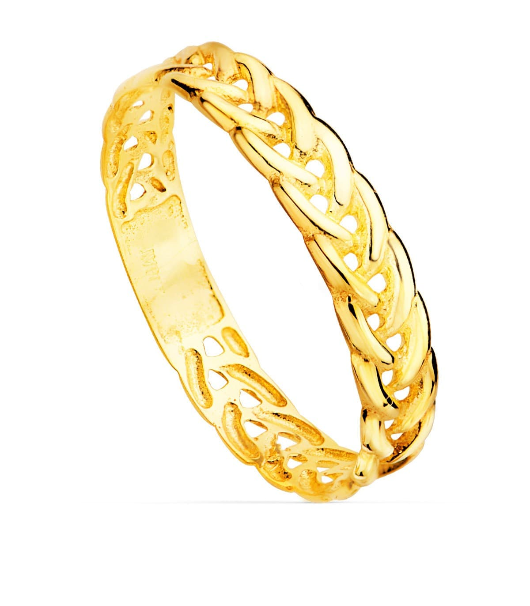

Anillo de Oro
Sortija de mujer fabricada en oro amarillo de 18 kilates (750 milésimas). Anillo caracterizado por un bonito diseño de trenza moderno y actual a la par que elegante. Los anillos trenzados de oro son tendencia y serán tus aliados perfectos para cualquier combinación. El ancho del cuerpo mide 3.5 mm.
En Joyería Vera, nos enorgullece ofrecer joyas de alta calidad con diseños únicos, y este anillo de oro no es una excepción. ¡Ordene el suyo hoy!
Precio: 151,20 €